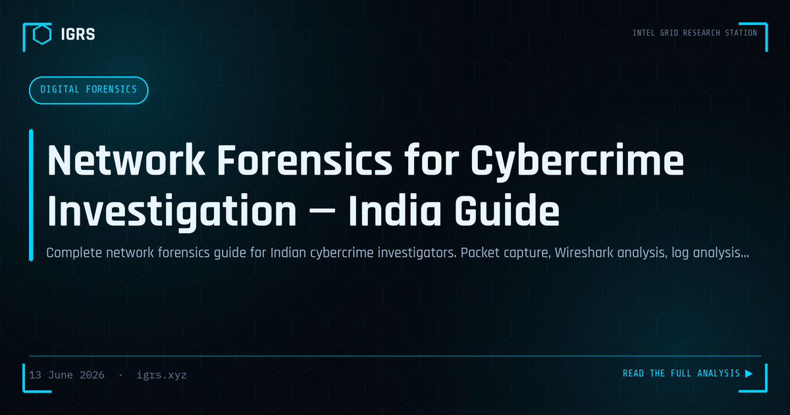

Network Forensics for Cybercrime Investigation — India Guide
Network Forensics in Cybercrime Investigation
Network forensics — the capture, recording, and analysis of network traffic and logs — is increasingly central to cybercrime investigation in India. Where device forensics examines what happened on a machine, network forensics reveals what happened between machines: the communication, the data exfiltration, the command-and-control traffic. This guide covers the complete network forensics methodology and its application under Indian law.
Sources of Network Evidence
| Source | What It Reveals |
|---|---|
| Packet captures (PCAP) | Full traffic content and metadata |
| NetFlow/IPFIX | Who communicated with whom, when, how much |
| Firewall logs | Allow/deny decisions, source/destination |
| DNS logs | Domain lookups, C2 communication |
| Proxy logs | HTTP/HTTPS requests through gateways |
| ISP records | Subscriber-to-IP mapping over time |
Essential Network Forensics Tools
The core toolkit is largely free and open-source:
- Wireshark — the industry-standard packet analyser
- Zeek (formerly Bro) — network security monitor extracting rich metadata
- NetworkMiner — passive sniffer that reassembles files and sessions
- Suricata — IDS/IPS with PCAP logging
- tcpdump — command-line capture for servers
Key Wireshark Filters for Investigation
| Filter | Purpose |
|---|---|
| http.request.method == "POST" | Data exfiltration, form submissions |
| dns.qry.name contains "domain" | C2 or malicious domain lookups |
| ip.addr == [suspect IP] | Filter all traffic to/from a host |
| tcp.port == 4444 | Common malware/reverse-shell ports |
| frame contains "password" | Plaintext credential exposure |
Reconstructing an Attack from Traffic
Network forensics reconstructs the full attack narrative: the initial connection, the exploitation attempt, the establishment of a command-and-control channel, lateral movement across the network, and the final data exfiltration. By following the packet trail, an investigator can establish exactly what an attacker accessed and what data left the network — critical for both prosecution and breach scope assessment.
ISP Data Requests in India
ISPs in India are required to maintain subscriber-to-IP mapping logs for at least 12 months. To obtain this data, investigators serve a Section 94 BNSS notice or court order specifying the IP address, the precise date and time (in UTC), and the official authority. This maps a suspect IP back to a real subscriber — a frequent turning point in network investigations.
Detecting Data Exfiltration
Identifying stolen data leaving the network is a core network forensics task. Indicators include large outbound transfers to unusual destinations, traffic to known-bad IPs, DNS tunnelling patterns, encrypted channels to non-standard ports, and beaconing behaviour characteristic of C2 communication. NetFlow analysis is particularly effective for spotting these patterns at scale.
Evidence Admissibility Under BSA 2023
Network evidence must meet the standards of the Bharatiya Sakshya Adhiniyam 2023. A Section 63 certificate is required, accompanied by the hash value of captured PCAP files, the identity of the person who performed the capture, and complete chain-of-custody documentation. Computing hashes at the moment of capture proves the traffic record has not been altered.
Log Retention Requirements
Under CERT-In directions, organisations must retain ICT system logs for 180 days and make them available to CERT-In on demand. This requirement is significant for network forensics because it ensures logs exist when an investigation begins. Organisations that fail to retain logs not only breach the directions but cripple their own ability to investigate incidents.
Network Forensics in Incident Response
During a live incident, network forensics guides the response: identifying compromised hosts by their traffic, locating the C2 infrastructure to block it, determining the scope of data accessed, and preserving evidence for later prosecution. The discipline bridges immediate defensive action and long-term legal accountability.
Building Network Forensics Capability
Developing network forensics skill requires hands-on practice with packet captures, understanding of normal versus anomalous traffic, familiarity with attacker techniques, and knowledge of the legal process for obtaining ISP data. For Indian investigators, combining technical packet analysis with the BNSS legal framework and BSA evidence standards produces network investigations that are both technically sound and court-ready — increasingly essential as cybercrime grows more network-centric.